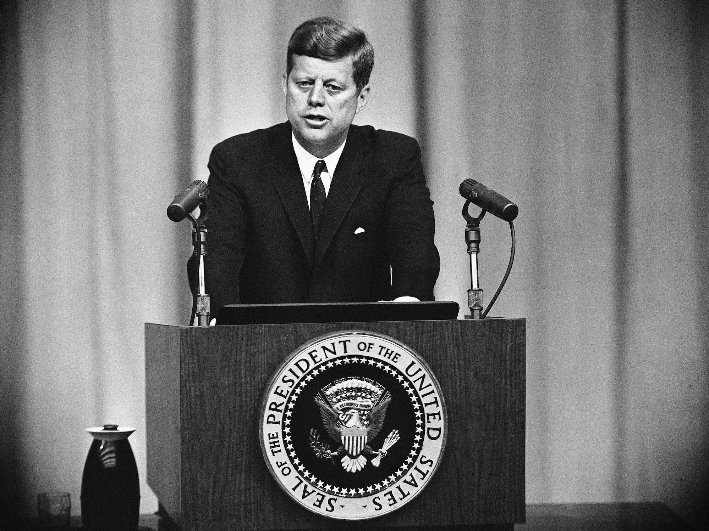

The assassination of John F. Kennedy was on November 22, 1963. The most popularly known shooter is named Lee Harvey Oswald, who was on the sixth floor overlooking Dealey plaza in Dallas, where the shooting took place. There are many conspiracy theories about what exactly happened and why. Some of the theroies include involvement of the CIA, Mafia, an inside job, or even a combination of them all. Some conspiracy theories also claim that the United States federal government covered up crucial information about the aftermath of the assassination. The Former Los Angeles District Attorney, Vincent Bugliosi, estimated that a total of 42 groups, 82 assassins, and 214 people had been accused at one time or another in various conspiracy scenarios.
The most famous theory invos multiple gunmen and focuses on a figure seen holding a black umbrella on the sunny day of Kennedy’s assassination. Pk, making him immobilized. This would allow the shooter to have a clear kill-shot with no complications.
Another belief is that American officials were somehow involved. Some say that the bullet actually came from the driver of Kennedy's own car. More speculations of the COne theory is that the fatal bullet actually came from the driver of Kennedy’s own car. The conspiracy also says that the CIA could've had something to do with the tradegy.
In the days after the assassination Robert Kennedy, John F. Kennedy's brother, had a feeling that he caused the shooting to happen.
Biographer Evan Thomas says, “Robert Kennedy had a fear that he had somehow gotten his own brother killed,” That Robert Kennedy’s attempts to prosecute the mob and to kill theri leader had backfired in some terrible way, had blown back, as the intelligence folks say.” This isn't completely unreasonable and could be a actual cause. There is no public evidence of an organized crime plot against the president, however.
This theroy may seem very different and unlogical to assume compared to the rest, but there is a actual form of evidence. Donald Trump himself told his opinion on the assassination in an interview that he delivered to Fox News last year.
At the time of the accusation, Trump was running against Senator Ted Cruz for the Republican presidential nomination. Trump claimed that his opponent’s father, Rafael Cruz, had been spotted with Oswald before the shooting. Even after winning the nomination, Trump stuck with his story.
He goes on to say: “All I did is point out the fact that on the cover of the National Enquirer, there’s a picture of him [Rafael Cruz] and crazy Lee Harvey Oswald having breakfast...I mean, if that was the New York Times, they would have gotten Pulitzer prizes for their reporting.”
Video about Theroies